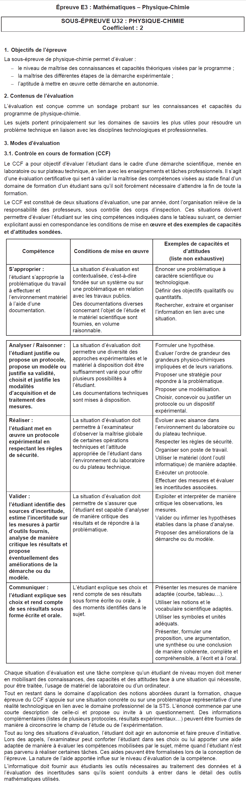

Il y a 1 CCF en fin de première année et 1 CCF en fin de seconde année.
Chaque CCF dure 1h.
La Physique-Chimie est coefficient 2.
Les compétences évaluées sont :
1/ S'approprier : L'étudiant s"approprie la problématique du travail à effectuer et l'environnement matériel à l'aide d'une documentation.
2/ Analyser, Raisonner : L'étudiant justifie ou propose un protocole, propose un modeèle ou justifie sa validité, choisit et justifie les modalités d'acquisition et de traitement des mesures.
3/ Réaliser : L'étudiant met en oeuvre un protocole expérimental en respectant les règles de sécurité.
4/ Valider : L'étudiant identifie des sources d'incertitude sur les mesures à partir d'outils fournis, analyse de manière critique les résultats et propose éventuellement des améliorations de la démarche ou du modèle.
5/ Communiquer : L'étudiant explique ses choix et rend compte de ses résultats sous forme écrite et orale.
voir référentiel p63
